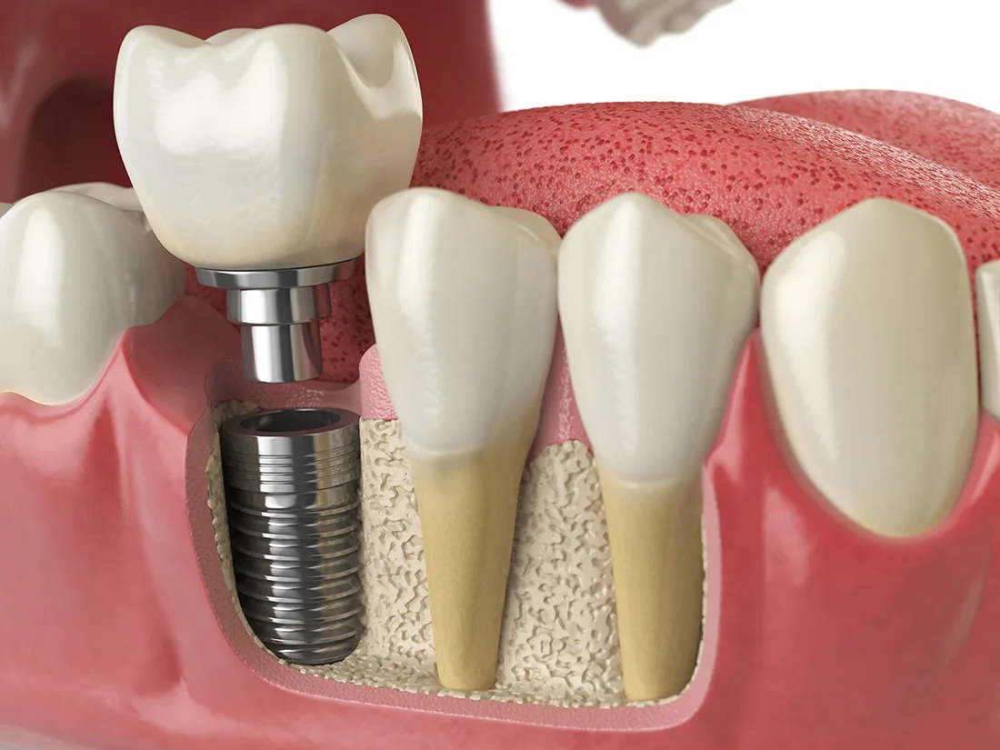

Stable Foundation
Implants anchor securely to help restore bite strength and confidence.
Dental implants replace missing teeth with a secure foundation that supports natural chewing, confidence, and a beautifully balanced smile.

We plan each implant case carefully so the final restoration looks natural, functions comfortably, and supports your long-term oral health.
Implants anchor securely to help restore bite strength and confidence.
Crowns are designed to blend with the rest of your smile for a seamless look.
Implant dentistry is highly individualized, so each phase is tailored to your oral health and the final smile outcome we want to achieve.
We review your jawbone, gum health, missing teeth, and treatment goals.
We map implant placement and restorative shape for function and aesthetics.
The implant is placed and allowed to integrate with the bone before final restoration.
A custom crown or bridge is attached to complete the smile with a natural finish.
Implants are one of the most advanced ways to replace missing teeth, offering stability and a result that feels fully integrated into the smile.
Implants help maintain bone structure better than many traditional replacement options.
Secure support makes it easier to bite, chew, and enjoy meals with confidence.
With proper care, implants can become a dependable part of your smile for years.
Custom restoration helps the implant blend with the surrounding teeth beautifully.
If you are considering implants, these answers can help you understand the basics before your consultation.